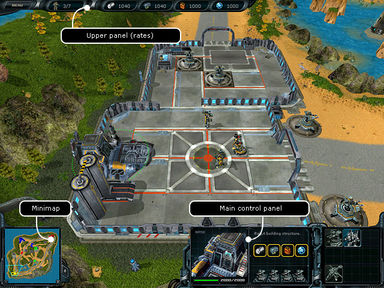
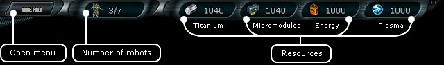
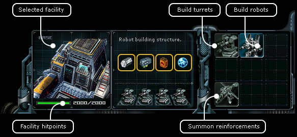

Planetary
battles > Main screen
|
Planetary
battles > Main screen
|
| Main screen In order to participate in planetary battles, the player needs to turn to the ruler of of any inhabited planet and request a relevant mission. If such a mission is available, the ruler can give it to the player. In fact the planetary battle mode is a fully functional game inside a game, with its own interface and rules. |

|
1. Upper panel (values) |

| Press the Menu button to open a window, where you can select one of the following items: • Resume • Restart a mission • Surrender • Exit To the right from the Menu button there is an indicator of the robot amount displayed in form of X/X The first figure shows the amount of available robots, the second indicates the total number of robots you can build. Further four indicators of your resourcers are shown: titan, micromodules, energy, plasma. 2. Minimap
3. Main control panel |

|
When you select a building in the right part of the main panel, you will see several buttons: • Building turrets - all buildings have it. • Building robots - only the bases have it. • Summon reinforcements - all buildings have it. The planet authorities are trying their best to help you, therefore they are preparing some amount of robots. You can summon reinforcements once in 8,5 minutes. The reinforcement status will be announced by the PC in the control center and the button will become active. The government helicopters will deliver the reinforcement to the building, from which you have summoned them. |
| |